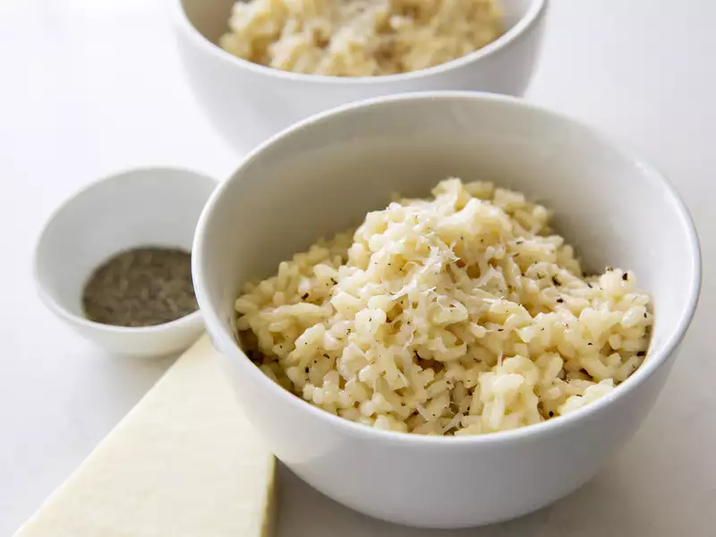

Risotto

Description
There's a reason so many restaurants put risotto on
their menus: It's not a dish most people attempt to cook at
home. Risotto has an earned reputation for being fussy.
This easy risotto recipe requires a attention and stirring,
but at its core, it's really just rice and broth. And when
those two simple ingredients come together, they create a
creamy, almost magical dish that's well worth the effort.
With a solid formula, like the one below, you'll be able
to tackle any risotto recipe and have a gorgeous meal on
the table in about 30 minutes.
Ingredients
- 32 ounces unsalted chicken stock, warmed
(you can also substitute vegetable broth or stock)
- 1 tablespoon unsalted butter
- 1 tablespoon olive oil
- 1 cup Arborio rice
- 1/4 teaspoon kosher salt
- 1/4 cup freshly grated Parmigiano-Reggiano
or Pecorino-Romano cheese
Steps
- Bring stock to a simmer in a saucepan over medium.
Reduce heat and keep warm.
- Melt the butter and heat the oil in a large skillet
or wide-bottomed pot. Add the rice; stir to coat all the
grains, 1 minute.
- Add 1 ladle of broth (½ cup to ¾ cup), stir, and
leave it alone until broth is nearly absorbed, 2 to 3
minutes. (Run a wooden spoon through it; rice should
slowly fill in the channel.)
- Stir, add another ladle of broth, and stir again.
Cook undisturbed until the broth is absorbed, 3 minutes.
Repeat until about 1 ladle of broth remains, 15 to 18
minutes of total cook time for the rice. Turn off heat.
- Add salt, remaining broth, and cheese. Stir gently
for 2 minutes. Serve immediately in warmed bowls, with
more grated cheese over top, if desired.